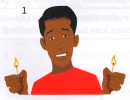
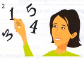
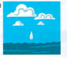

Exercises
33.1 Match each idiom on the left with its definition on the right.
- get wind of something
- add fuel to the flames
- spread like wildfire
- go to the ends of the earth
- be a drop in the ocean
- be in deep water
- see how the wind is blowing
- blow hot and cold
- spread very quickly
- be an insignificant part of something
- observe how a situation is developing
- react in different, unpredictable ways
- do everything you can
- hear about something secret
- be in a difficult situation
- make a difficult situation worse
33.2 Rewrite each sentence with an idiom. Use the keyword in brackets.
- You'll be fine working for someone like that - he's a very decent man. (EARTH)
- Unfortunately, no one paid any attention to my advice. (GROUND)
- Unfortunately, her angry words have only made the situation worse. (FUEL)
- I think Rosie must be in trouble - the boss has asked to see her at once. (WATER)
- Noah doesn't really have the experience to cope with his new job. (DEPTH)
- Spreading rumours like that is a risky thing to do. (FIRE)
- Choose a number at random and multiply it by 3. (AIR)
- The police were unable to find where the escaped convicts were hiding. (GROUND)
33.3 Put the words in order and make sentences.
- like / The / of / news wildfire / spread / their divorce
- the / the / sea / devil / blue between / I'm deep / and
- no fire There smoke / is / without
- heat the / of Don't / anything / moment / in say the
- and / I / the / cold / hot / he / way / blows / hate
- the / thrown / when / I / I / university end / was in deep / started / at
33.4 Which idioms do these pictures make you think of?
1

2

3

33.5 Look at the different idioms relating to earth, air, fire and water both in this unit and in Unit 43. Which abstract concepts do each of these elements seem to represent in the English mind?
Over to you
Here are some more idioms connected with the elements. Look them up in your dictionary. Write a definition and then write the idioms in sentences of your own.
set the world on fire
go up in smoke
it's all water under the bridge
pour cold water on something
the tide turning
make waves